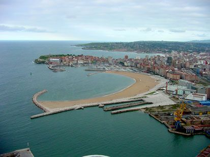

La playa de Poniente es una de las tres playas urbanas con las que cuenta la ciudad de Gijón, situada en Asturias, España, las otras dos son la de San Lorenzo y la del Arbeyal mientras que el concejo de Gijón cuenta con otras seis. Es de carácter artificial y fue creada a mediados de los años 1990.
Se encuentra en la parte oeste de la ciudad, en la zona del barrio de Poniente, con el puerto deportivo como límite oriental y el barrio del Natahoyo como límite occidental. Tiene una longitud de unos 500 metros y una superficie de unos 140.000 metros cuadrados en bajamar y unos 60.000 en pleamar. Es muy concurrida y de fácil acceso, con una amplia escalinata central y acceso para personas con dificultades de movilidad, y con presencia del equipo de salvamento en temporada estival.
La playa de Poniente dispone de varias duchas en sus tres zonas (oeste, central, y este), además de varios "lavapiés". Forma parte de la Costa Central asturiana, no presenta ni vegetación en la playa, ni protección medioambiental.
También dispone de una pasarela, la cual sólo se coloca durante el período de verano. Esta pasarela lleva desde la parte de la escalinata central (empieza en la planta inferior del edificio de salvamento) hasta un punto situado a 10 metros de la orilla del mar.
En la zona central del paseo se encuentra el edificio base del equipo de salvamento, que acoge los servicios de vigilancia, salvamento y primeros auxilios de la playa, coordinados con la Central de Salvamento instalada en la escalera Nº12 de la Playa de San Lorenzo de Gijón.
La vigilancia se complementa con una torreta y un mástil ubicados en sus proximidades donde se sitúa la bandera verde, amarilla o roja según las condiciones lo aconsejen, si bien esta suele ser verde.
Página realizada por: Javier Martínez Peláez, para un trabajo del módulo "Lenguaje de Marcas"